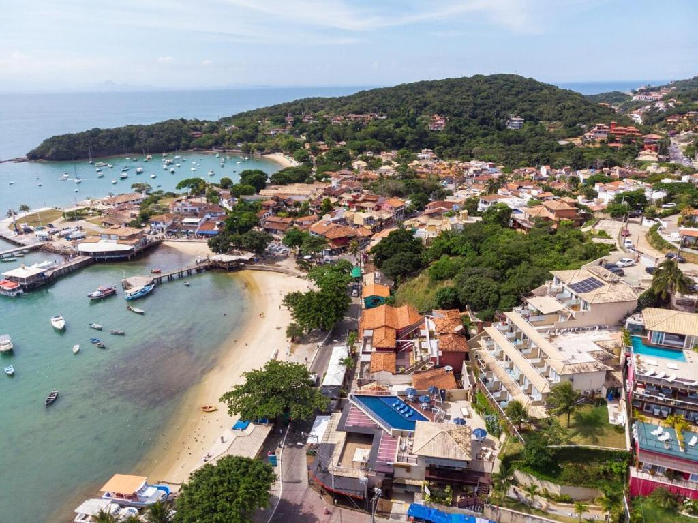
13 DEZ · 09H—19H
Búzios
Praias, centro e passeio a pé.
Seu roteiro de bordo para aproveitar cada escala com tranquilidade.
Experiências boas, gastos sob controle e retorno seguro ao navio.
| Dia | Data | Destino | Horário | |
|---|---|---|---|---|
| 01 | 12/12 · Sáb | SantosEmbarque | 15h30 · saída 17h | ⚓ |
| 02 | 13/12 · Dom | BúziosRio de Janeiro | 09h—19h | |
| 03 | 14/12 · Seg | Navegação | Dia a bordo | ✦ |
| 04 | 15/12 · Ter | SalvadorBahia | 08h—17h | |
| 05 | 16/12 · Qua | MaceióAlagoas | 09h—17h | |
| 06 | 17/12 · Qui | Navegação | Dia a bordo | ✦ |
| 07 | 18/12 · Sex | Navegação | Dia a bordo | ✦ |
| 08 | 19/12 · Sáb | SantosDesembarque | Chegada prevista 06h | ⚓ |
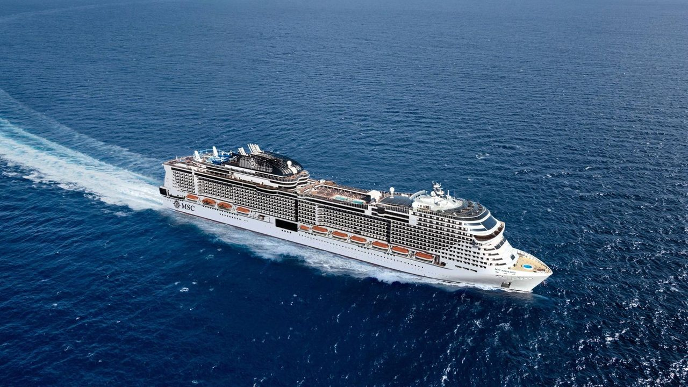
Uma semana a bordo, com três escalas no litoral brasileiro.

Praias, centro e passeio a pé.

História, arquitetura e sabores da Bahia.
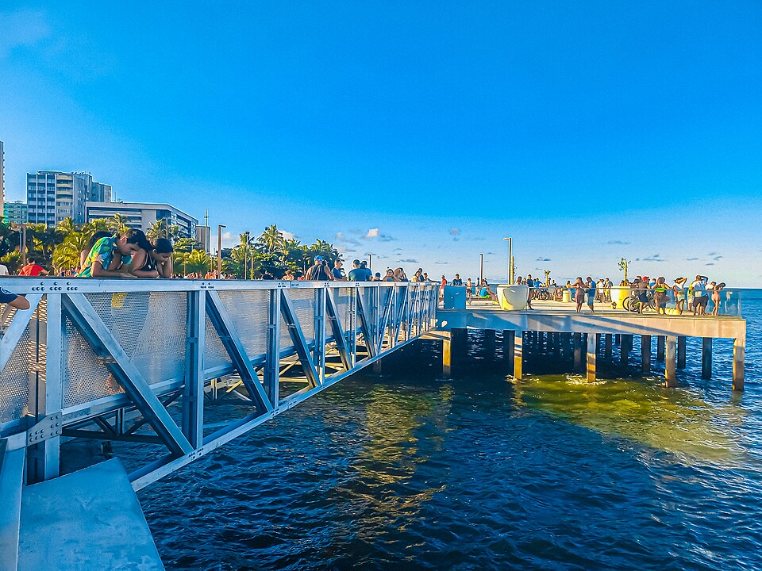
Pajuçara, piscinas naturais e Ponta Verde.
Prioridade em cada escala
Confirme o horário oficial de all aboard no aplicativo ou informativo diário da MSC. A saída do navio não é o limite para chegar ao terminal.
O melhor destino para explorar por conta própria: centro turístico próximo ao desembarque e atrações que podem ser feitas a pé.
O ponto do tender pode variar.
O local habitual é o Píer do Centro ou Porto Veleiro. Confirme a operação do dia e não deixe para pegar o último barco.
Toque numa foto para localizar; marque os pontos para calcular uma rota.
Mapa © OpenStreetMap contributors · rota gratuita quando conectado.
Caminhada à beira-mar, estátuas e paisagens. Reserve cerca de 15–20 minutos até a região da Praia dos Ossos.
Duas praias pequenas de águas geralmente tranquilas. Acesso por trilha com escadaria a partir da região dos Ossos. Leve toalha e água.
Principal rua turística, com lojas, restaurantes e arquitetura charmosa, próxima ao desembarque.
Praia pequena e charmosa, com barcos de pescadores; combina com a caminhada pela Orla Bardot.
Praia conhecida e com boa estrutura de quiosques. Acesso por táxi ou táxi aquático.
Valores de planejamento por pessoa, não cotações. Confirme preço e horário com o operador local.
Comida brasileira em ambiente agradável.
TripAdvisor 5,0/5 · 716 avaliações na consultaFrutos do mar e cozinha mediterrânea.
TripAdvisor 4,9/5 · 3.318 avaliações na consultaExperimente peixe grelhado, camarão, lula, casquinha de siri e frutos do mar.
| 09h–09h45 | Desembarque e caminhada até o centro |
| 09h45–10h30 | Rua das Pedras |
| 10h30–11h15 | Orla Bardot |
| 11h15–12h | Praia dos Ossos e Igreja de Sant'Ana |
| 12h–13h | Praia da Azeda e Azedinha |
| 13h–14h | Almoço |
| 14h–15h30 | Praia de João Fernandes (táxi ou táxi aquático) |
| 15h30–16h15 | Retorno ao centro |
| 16h15–16h30 | Caminhar até o tender e verificar a fila |
| Até 17h30 | Meta de estar de volta a bordo |
Uma escala de cultura e gastronomia: o terminal fica perto do Mercado Modelo, do Elevador Lacerda e do acesso ao centro histórico.
Os pontos opcionais mais distantes estão marcados no mapa. Escolha só se houver tempo para voltar.
Mapa © OpenStreetMap contributors · Farol da Barra exige deslocamento de carro ou aplicativo.
Centro histórico, arquitetura colonial, ruas coloridas, música, cultura afro-brasileira e história. Principal atração da escala.
Artesanato, produtos regionais, comidas e lembranças. Fica próximo ao porto e é uma boa parada para souvenirs.
Cartão-postal que liga Cidade Baixa à Cidade Alta. A utilização é paga; reserve um pequeno valor. A vista da Baía de Todos-os-Santos é bonita.
Praça histórica, arquitetura religiosa e boas fotos. A entrada em espaços internos pode ser paga ou ter condições específicas.
Um dos cenários mais conhecidos da Bahia, com cultura, música e história.
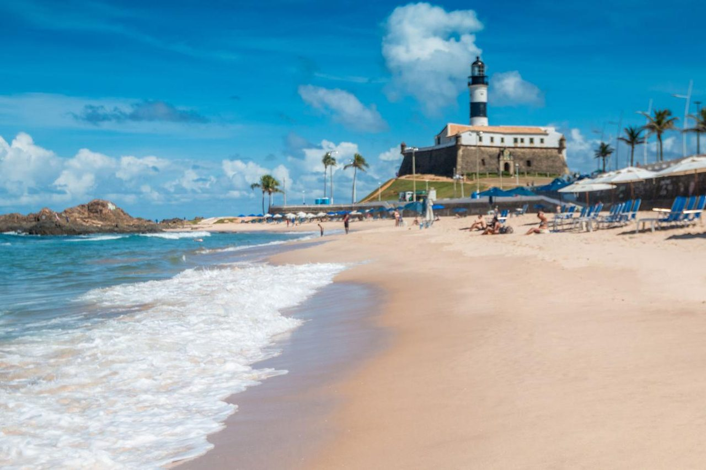
Forte histórico, museu e vista para o oceano. Exige deslocamento de carro ou aplicativo; escolha apenas se houver tempo.
Ingresso estimado: R$ 15–25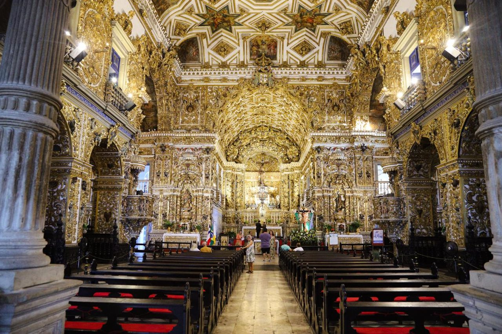
Interior histórico com decoração barroca, uma experiência cultural interessante.
Ingresso estimado: R$ 15–25Verifique tarifa e funcionamento.Pergunte sobre dendê e pimenta se tiver sensibilidade.
Buffet para provar diferentes pratos baianos.
Conhecido pela culinária baiana, especialmente moquecas. Mais caro e distante do porto.
Não é a primeira escolha para esta escala.Minha recomendação: almoçar no Pelourinho para economizar deslocamento e experimentar acarajé ou moqueca.
| 08h–08h45 | Desembarque |
| 08h45–09h15 | Mercado Modelo |
| 09h15–09h45 | Elevador Lacerda |
| 09h45–11h30 | Pelourinho e Terreiro de Jesus |
| 11h30–12h15 | Catedral e arredores |
| 12h15–13h30 | Almoço típico |
| 13h30–14h30 | Passeio pelo centro histórico |
| 14h30–15h15 | Retorno ao Mercado Modelo |
| 15h15–15h45 | Compras e retorno ao terminal |
| Até 16h | Meta de estar a bordo |
Praias, mar azul e uma orla agradável. A recomendação é conhecer Pajuçara e Ponta Verde, sem tentar encaixar praias distantes.
O terminal fica dentro da área portuária.
Não caminhe para sair do porto; prefira táxi ou transporte por aplicativo. Pajuçara fica aproximadamente 3,5 km do terminal.
Selecione atrações para montar o trajeto. Piscinas naturais dependem da maré.
Mapa © OpenStreetMap contributors · transporte recomendado entre porto e orla.
Águas claras, jangadas, paisagens bonitas e boa estrutura turística.
Artesanato alagoano, roupas, lembranças e produtos regionais.
Estrutura à beira-mar, com paisagens e boas fotos; uma parada interessante na orla.
Ponto clássico para fotografias na região da Ponta Verde.
Caminhada pelo calçadão, coqueiros, mar azul e quiosques.
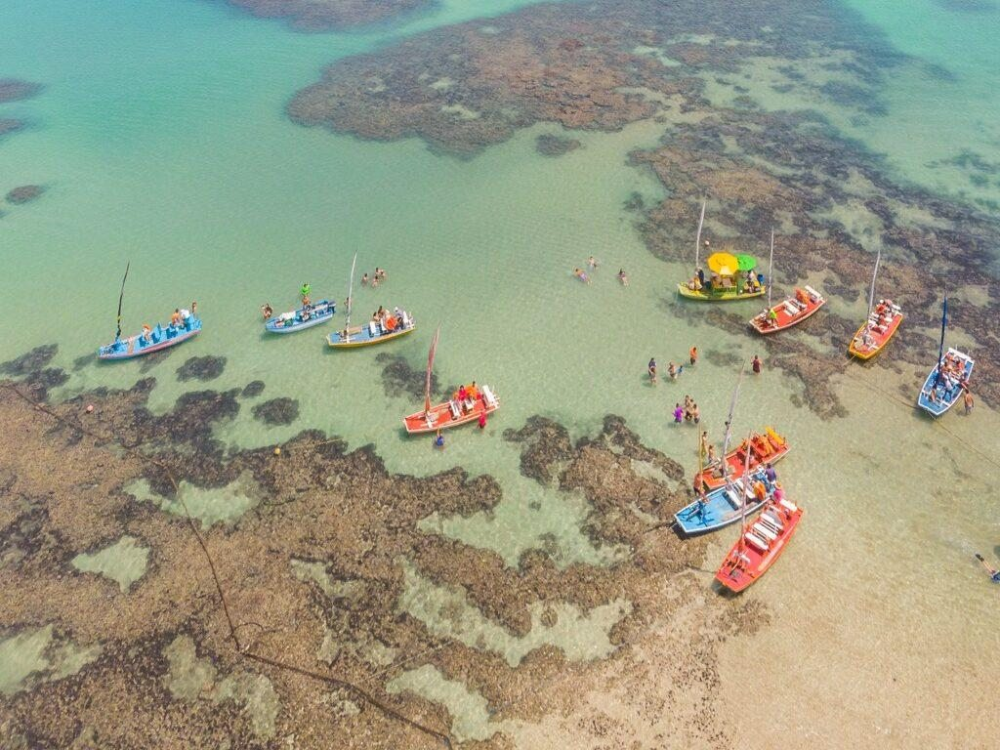
Passeio de jangada e observação de peixes. Consulte a tábua de marés de 16/12/2026 e confirme se o horário permite passear e voltar com segurança.
R$ 50–80 · cerca de 2 horas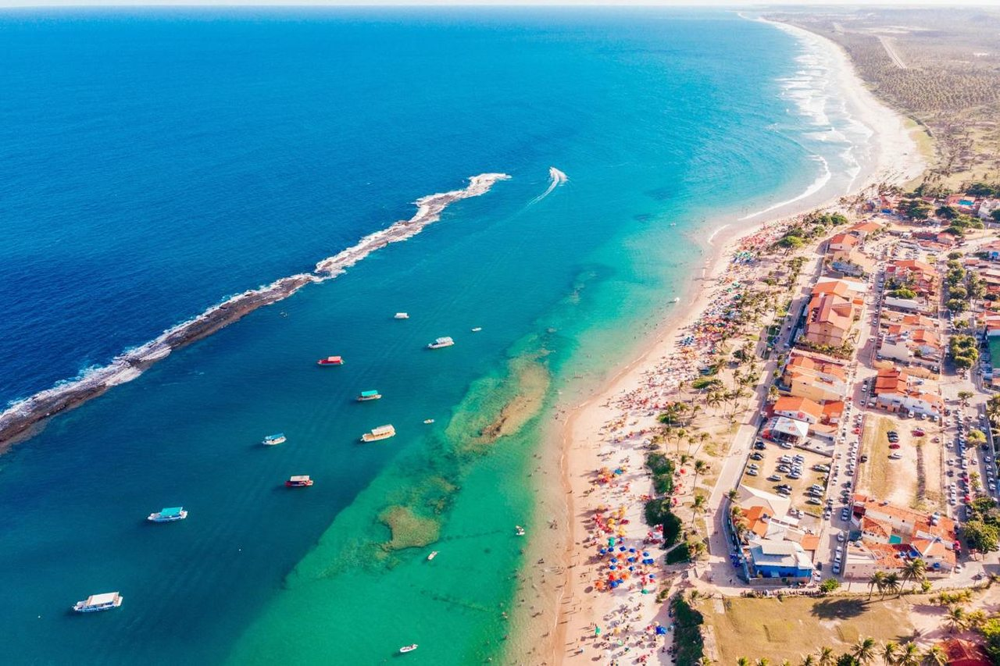
Praia bonita, fora da região central; exige transporte e tempo adicional. Não é recomendada nesta escala.
R$ 100–180 por pessoaTransporte e passeio, estimativa.Evite Gunga, Maragogi e Praia do Francês nesta escala: os deslocamentos podem comprometer o retorno.
Comida típica nordestina: carne de sol, macaxeira, baião de dois e outras especialidades. Ambiente temático e climatizado.
Referência: 4,6/5 · mais de 21 mil avaliações na consultaFamoso pelo chiclete de camarão, frutos do mar e culinária regional.
Referência: 4,5/5 · Av. Dr. Antônio Gouveia, 607Comida regional, ambiente temático e opções de frutos do mar e pratos nordestinos.
| 09h–09h30 | Desembarque |
| 09h30–10h | Táxi até Pajuçara |
| 10h–10h45 | Praia de Pajuçara |
| 10h45–11h30 | Feirinha de artesanato |
| 11h30–12h15 | Caminhada pela orla |
| 12h15–13h30 | Almoço regional |
| 13h30–14h15 | Marco dos Corais |
| 14h15–14h45 | Letreiro Eu Amo Maceió |
| 14h45–15h15 | Ponta Verde |
| 15h15–15h45 | Retorno de táxi ao porto |
| Até 16h | Meta de estar a bordo |
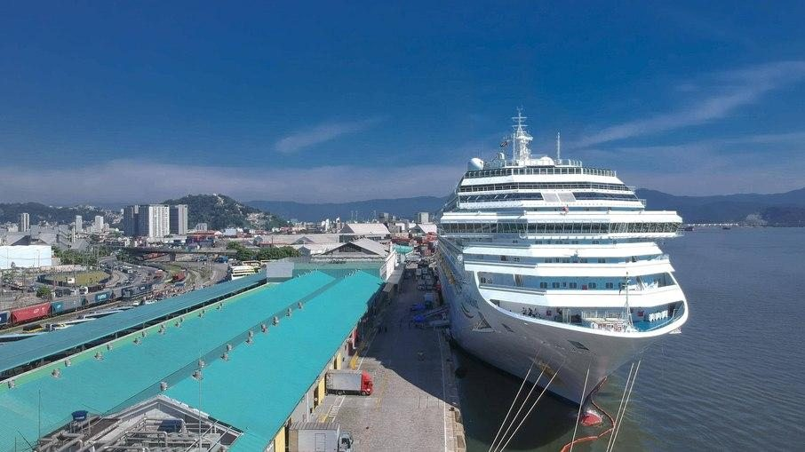
Os dias de chegada e retorno são dedicados à operação do navio. Planeje o transporte e deixe passeios para outro momento.
Saída prevista do MSC Virtuosa às 17h. Siga as orientações da MSC e do terminal Concais para horário de chegada e procedimentos.
Não planeje passeios como parte principal do roteiro. Procedimentos portuários podem alterar o horário de saída do terminal.
Depois de desembarcar, você poderá conhecer o centro histórico ou a orla, se o horário de liberação e o transporte permitirem. A prioridade é cumprir os procedimentos do porto e confirmar a logística do dia.
Custos indicativos, ranking pessoal e lembretes para cada escala.
Planejamento, não cotações ou preços confirmados para dezembro de 2026. Inclui alimentação, transporte local e atividades opcionais; o cenário econômico prioriza atrações gratuitas.
| Destino | Econômico | Intermediário | Completo |
|---|---|---|---|
| Búzios | R$ 50–100 | R$ 150–280 | R$ 250–450 |
| Salvador | R$ 50–100 | R$ 100–180 | R$ 180–300 |
| Maceió | R$ 80–140 | R$ 160–260 | R$ 250–400 |
| Total | R$ 180–340 | R$ 410–720 | R$ 680–1.150 |
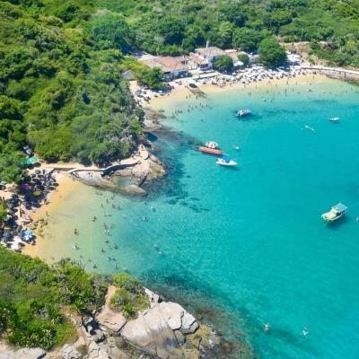
Beleza natural, custo zero e proximidade do centro.
História, cultura, arquitetura e gastronomia.
Praias de águas claras e uma orla muito bonita.
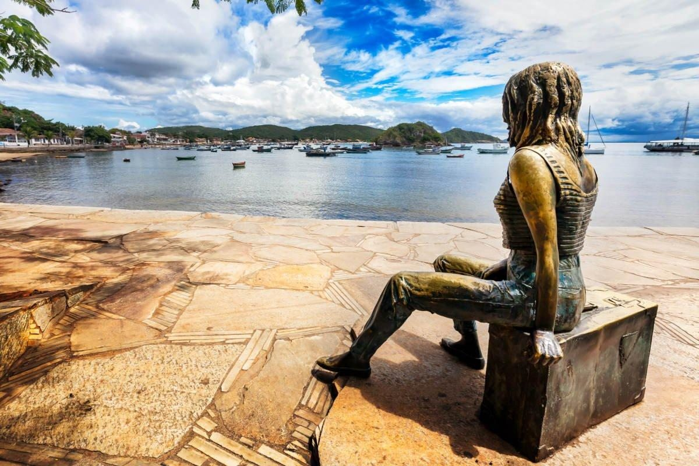
Passeio bonito, fácil e gratuito.
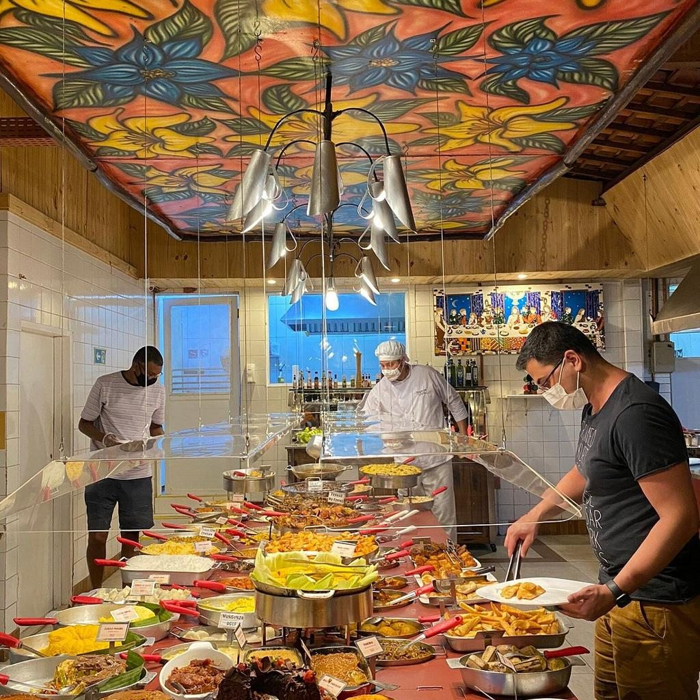
Uma experiência gastronômica regional que vale conhecer.
Em Búzios, faria o passeio independente a pé e aproveitaria as praias. Em Salvador, exploraria o centro histórico. Em Maceió, pegaria um táxi até Pajuçara e caminharia pela orla de Ponta Verde.
Assim você conhece bastante sem gastar muito com transporte ou excursões. Reserve parte do orçamento para uma boa refeição regional e, se a maré permitir, para as piscinas naturais de Maceió.
Horários de embarque e condições de operação precisam ser confirmados com a MSC. Avaliações e preços são referências consultadas, não garantias para a data da escala.